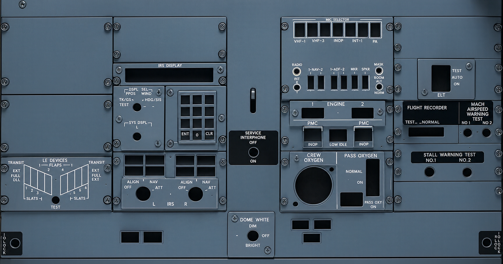

IRS · DSPL SEL / BRT
حلقهٔ بیرونی: انتخاب مود و خط مشکی مرجع. ناب وسط: تنظیم مستقل روشنایی. با کشیدن، چرخ ماوس یا کلیدهای جهت بچرخان.
بازگشت به یونیفاید
حلقهٔ بیرونی: انتخاب مود و خط مشکی مرجع. ناب وسط: تنظیم مستقل روشنایی. با کشیدن، چرخ ماوس یا کلیدهای جهت بچرخان.
بازگشت به یونیفاید